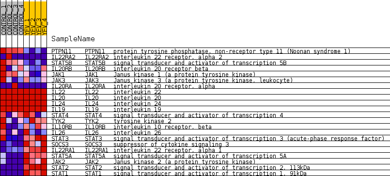
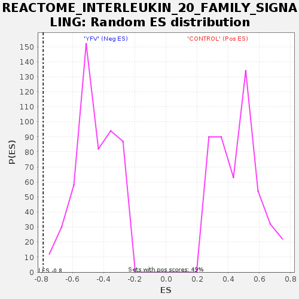

Profile of the Running ES Score & Positions of GeneSet Members on the Rank Ordered List
| Dataset | MATRIZ_GSE99081_collapsed_to_symbols.gsea_CLASE_99081.cls#CONTROL_versus_YFV |
| Phenotype | gsea_CLASE_99081.cls#CONTROL_versus_YFV |
| Upregulated in class | YFV |
| GeneSet | REACTOME_INTERLEUKIN_20_FAMILY_SIGNALING |
| Enrichment Score (ES) | -0.78945655 |
| Normalized Enrichment Score (NES) | -1.7411066 |
| Nominal p-value | 0.0 |
| FDR q-value | 0.028530328 |
| FWER p-Value | 0.305 |
| SYMBOL | TITLE | RANK IN GENE LIST | RANK METRIC SCORE | RUNNING ES | CORE ENRICHMENT | |
|---|---|---|---|---|---|---|
| 1 | PTPN11 | protein tyrosine phosphatase, non-receptor type 11 (Noonan syndrome 1) | 389 | 0.883 | 0.0312 | No |
| 2 | IL22RA2 | interleukin 22 receptor, alpha 2 | 1870 | 0.499 | -0.0289 | No |
| 3 | STAT5B | signal transducer and activator of transcription 5B | 3043 | 0.337 | -0.0801 | No |
| 4 | IL20RB | interleukin 20 receptor beta | 4053 | 0.239 | -0.1274 | No |
| 5 | JAK1 | Janus kinase 1 (a protein tyrosine kinase) | 5037 | 0.156 | -0.1782 | No |
| 6 | JAK3 | Janus kinase 3 (a protein tyrosine kinase, leukocyte) | 6358 | 0.049 | -0.2566 | No |
| 7 | IL20RA | interleukin 20 receptor, alpha | 7421 | 0.000 | -0.3221 | No |
| 8 | IL22 | interleukin 22 | 8543 | 0.000 | -0.3912 | No |
| 9 | IL20 | interleukin 20 | 8546 | 0.000 | -0.3913 | No |
| 10 | IL24 | interleukin 24 | 8548 | 0.000 | -0.3914 | No |
| 11 | IL19 | interleukin 19 | 8553 | 0.000 | -0.3916 | No |
| 12 | STAT4 | signal transducer and activator of transcription 4 | 9842 | -0.019 | -0.4699 | No |
| 13 | TYK2 | tyrosine kinase 2 | 10673 | -0.073 | -0.5165 | No |
| 14 | IL10RB | interleukin 10 receptor, beta | 10989 | -0.101 | -0.5296 | No |
| 15 | IL26 | interleukin 26 | 11027 | -0.104 | -0.5254 | No |
| 16 | STAT3 | signal transducer and activator of transcription 3 (acute-phase response factor) | 15310 | -0.748 | -0.7427 | Yes |
| 17 | SOCS3 | suppressor of cytokine signaling 3 | 15669 | -0.939 | -0.7061 | Yes |
| 18 | IL22RA1 | interleukin 22 receptor, alpha 1 | 15924 | -1.340 | -0.6380 | Yes |
| 19 | STAT5A | signal transducer and activator of transcription 5A | 15943 | -1.404 | -0.5514 | Yes |
| 20 | JAK2 | Janus kinase 2 (a protein tyrosine kinase) | 16053 | -1.843 | -0.4430 | Yes |
| 21 | STAT2 | signal transducer and activator of transcription 2, 113kDa | 16178 | -3.116 | -0.2559 | Yes |
| 22 | STAT1 | signal transducer and activator of transcription 1, 91kDa | 16215 | -4.153 | 0.0015 | Yes |

